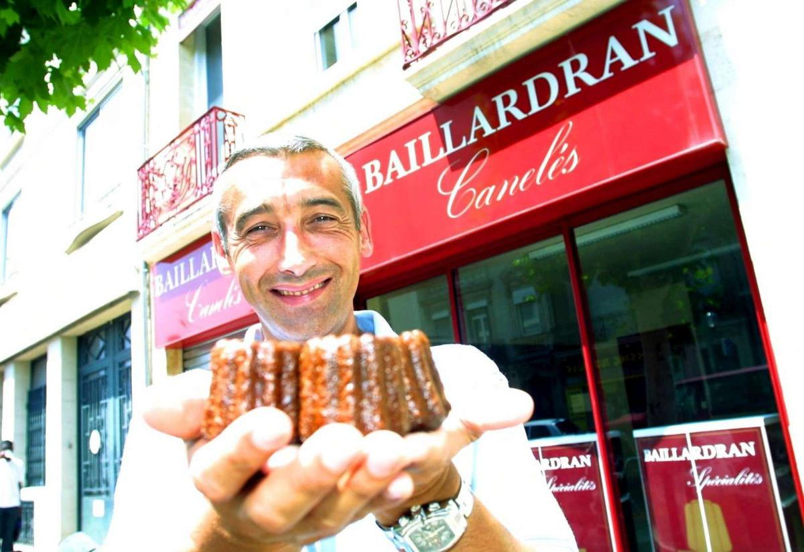

Adresses
Les meilleurs lieux pour déguster des cannelés à Bordeaux
Bordeaux regorge de pâtisseries et boutiques spécialisées qui subliment le cannelé. Voici quelques incontournables :
- Baillardran : l’institution. Présente dans toute la ville, cette enseigne offre une cuisson impeccable et une pâte onctueuse.
- La Toque Cuivrée : réputée pour son excellent rapport qualité-prix et des cannelés croustillants à souhait.
- Maison Lemoine : artisanale et raffinée, cette maison familiale propose des cannelés de grande qualité.
- Michel's Bakery : pour une version moderne du cannelé, revisitée avec des saveurs originales comme caramel au beurre salé ou citron yuzu.
- Marché des Capucins : de nombreux producteurs y proposent des cannelés faits maison, souvent encore tièdes !
Conseil : dégustez-les tièdes, avec un bon café ou un verre de vin moelleux de la région !
